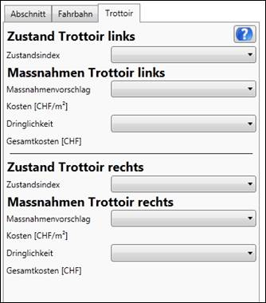

Am Karteireiter Trottoir (siehe Abbildung 11) kann der Zustandsindex für das erfasste Trottoir mit Hilfe eines Dropdownmenüs angegeben werden. Die Zustandserfassung Trottoir ist nur verfügbar, falls für den Strassenabschnitt in EMSG-Master ein Trottoir erfasst wurde.

Abbildung 11: Dialog „Zustandserfassung Trottoir“